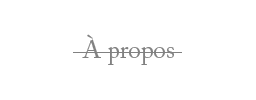
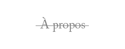
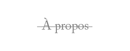
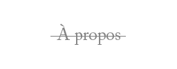

 

Tout d’abord, je voudrais mettre de l’avant une de mes aspirations, celle de me développer professionnellement pour faire un travail passionnant à mes yeux. Pour cela, je dirige mon parcours vers les médias interactifs.
Pour arriver à ce niveau universitaire, j’ai commencé à me spécialiser durant mes études au Collège André-Grasset dans le programme d’Arts, Lettres et Communication. Ce diplôme d’études collégiales m’a permis d’acquérir de riches connaissances au niveau médiatique et culturel que je mets à l’œuvre dans le programme d’Animation et Recherches Culturelles de l’Université du Québec à Montréal ainsi que dans la réalisation de ce portfolio. Mes connaissances sont principalement basées sur l’utilisation d’appareils photographiques, filmiques ainsi que des consoles de son, de lumière et de montage qui me permettent de pouvoir occuper différents postes autant dans la pré-production, la production et la post-production d’un projet. Aussi, j’ai des bases en design de site web qui me permettent de coder en HTML et en CSS.
Par ma curiosité intellectuelle et ma volonté de développer de nouvelles connaissances sur les technologies interactives ainsi que la création numérique, j’aspire entrer au baccalauréat en communication (médias interactifs) offert par l’UQÀM. Je voudrais me spécialiser dans ce domaine, car c’est une branche des communications qui permettent aux développeurs d’être créatifs, d’explorer, d’expérimenter tout en convergeant le domaine artistique et technologique. Ce baccalauréat serait ma porte d’entrée dans ce monde en plein développement et j’aimerais faire partie de ces précurseurs, c’est pourquoi je veux apprendre au sein de ce programme.